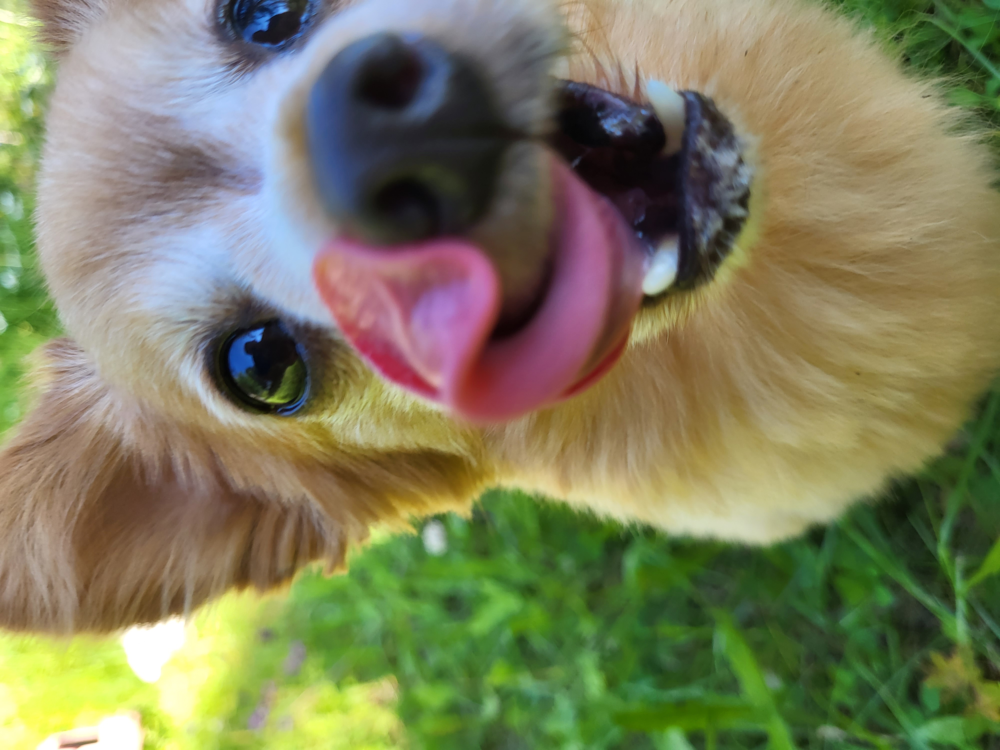

Moi!
Tämä sivu on omistettu koiralleni
ja myös koirani sisaruksille
Minulla ja siskollani on tällä hetkellä kolme sisarusta pentueesta.
Minulla on tämän sivun pääosaa esittävä Batu ja kaksi muuta ovat siskollani.
Yksi siskoni koirista (Brutus) on alunperin äitini koira,
mutta ikävien tapahtumien johdosta siirtyi siskolleni n. 3,5v sitten.
Toinen ikävä tapahtuma sattui 17.5.2024 perjantaina,
kun siskoni vanhin koira, Nelly, menehtyi yllättäen.
Nelly oli kolmen muun isosisko, samat vanhemmat, mutta eri pentue.
Linkkejä klikkaamalla voit hieman tutustua kaikkiin neljään otukseen.
